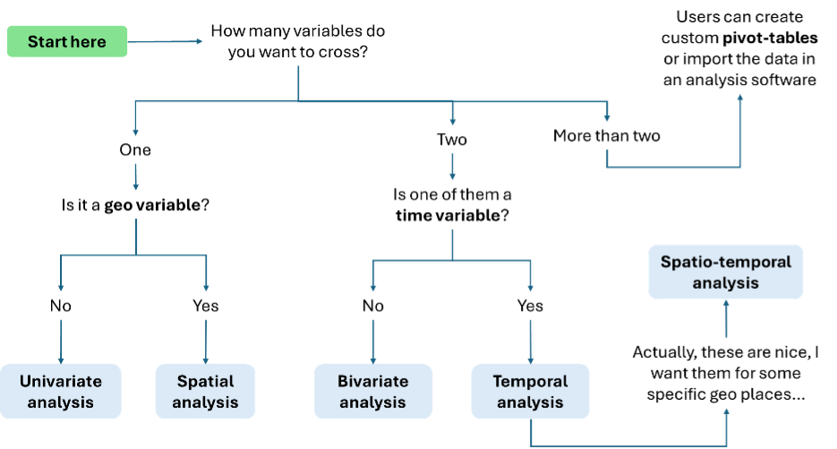
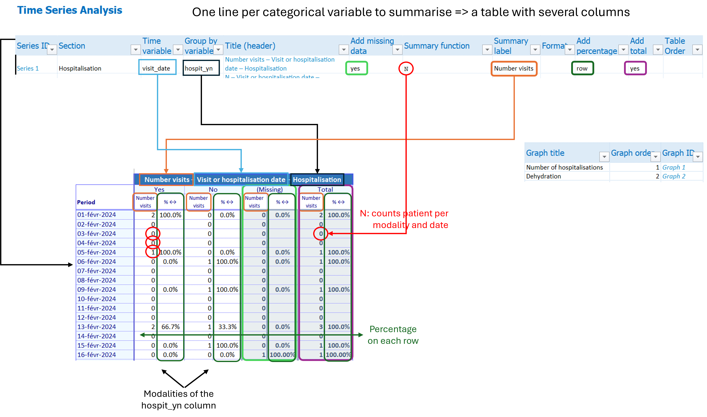

Cheatsheet analyses
Choosing analyses

Univariate analyses
| Column | Type | Mandatory | Details |
|---|---|---|---|
| Section | Free text | Yes | Group tables by section |
| Table title | Free text | Yes | Short title |
| Group by variable (row) | Dropdown | Yes | One categorical variable to summarise |
| Add missing data | Dropdown (yes/no) | Add rows with missing values counts? | |
| Summary function | Free text | Yes | N to count rows, other formulas accepted |
| Summary label | Free text | Name of the summary | |
| Format | Dropdown | Format of the summary | |
| Add percentage | Dropdown (yes/no) | ||
| Add graph | Dropdown (yes/no) | ||
| Flip coordinates | Dropdown (yes/no) | Inverse x and y axis of the graph |
Bivariate analyses
| Column | Type | Mandatory | Details |
|---|---|---|---|
| Section | Free text | Yes | Group tables by section |
| Table title | Free text | Yes | Short title |
| Group by variable (row) | Dropdown | Yes | One categorical variable to summarise |
| Group by variable (column) | Yes | ||
| Add missing data | Dropdown (no/row/column/all) | Add missing values counts? | |
| Summary function | Free text | Yes | N to count rows, but formulas accepted |
| Summary label | Free text | Name of the summary | |
| Format | Dropdown | Format of the summary | |
| Add percentage | Dropdown (yes/no) | ||
| Add graph | Dropdown (values/percentage) | ||
| Flip coordinates | Dropdown (yes/no) | Inverse x and y axis of the graph |
Time series
Table 1
Defines the tables (organise them in sections, which temporal variable, which grouping variable if any, title, summarising formula etc. )
| Column | Type | Mandatory | Details |
|---|---|---|---|
| Series ID | - | Automatic | |
| Section | Free text | Yes | Group columns by section |
| Title | - | Automatic | |
| Add missing data | Dropdown (yes/no) | Add missing values counts? | |
| Summary function | Free text | Yes | N to count rows, but formula accepted |
| Summary label | Free text | Name of the summary | |
| Format | Dropdown | Format of the summary | |
| Add percentage | Dropdown (column/row/no) | ||
| Add total | Dropdown (yes/no) | ||
| Table order | Free text |
Table 2: graph metadata
This table table is used to define the title and order of the graphs associated with the time series.
| Column | Type | Mandatory | Details |
|---|---|---|---|
| Graph title | Free text | Yes | Short title |
| Graph order | Free text | Yes | |
| Graph ID | Automatic | Yes |
Table 3: define the graph
This table defines the graphs. It imports a lot of information from the two other tables. One graph can plot several series. A series is a column in a time series table.
Example: a graph plotting the number of “Cured” and “Dead” across time is plotting two series, the number of cured and the number of dead, which were obtained from one table where the exit_status was used as grouping variable.
| Column | Type | Mandatory | Details |
|---|---|---|---|
| Graph title | Dropdown | Yes | Defined in the previous table |
| Series title | Dropdown | Yes | Choose which variable summary to plot (ex: counts for outcomes) |
| Graph ID | - | Automatic | |
| Series ID | - | Automatic | |
| Graph order | - | Automatic | |
| Time variable (row) | - | Automatic | |
| Group by variable (column | - | Automatic | |
| Choices | Dropdown (variable modality) | Yes | Choose modality to plot (ex: deads) |
| Label | Free text | Label of the modality | |
| Plot values or percentages | Dropdown (values/percentage) | Yes | |
| Chart type | Dropdown (bar/line/point) | ||
| Y-axis | Dropdown (left/right) |
Summary


Some functions/examples
In the global summary
DATE_RANGE is a custom funtion to display the min and max of a date variable. Example: DATE_RANGE(visit_date).
COUNTA(case_id): counts the number of non empty case_id.
COUNTIF(hospit_yn, "Yes") counts the number of Yes in the hospit_yn variable
Count rows
N: count the number of rows for each modality of a variable. The setup user defines for each analysis whether the empty cells should be added in the table (as their own categories).
Calculate a CFR
SUM(cfr_numerator) / SUM(cfr_denominator) to calculate a Case Fatality Rate. - The cfr_numerator is a calculated variable based on the outcome column; it takes 1 for deceased patient and zero for others. - The cfr_denominator is also a calculated column, which takes 1 for discharged patients and 0 for other patients.
Don’t forget to pick a percent format with appropriate rounding level.
Spatial analyses or spatio-temporal analyses
For the top ten (or whichever value you chose) areas with the most cases, use N as the function summary. For the top ten areas for the number of deaths, use SUM(is_dead_01) where is_dead_01 here is a calculated variable that takes 1 if the patient is dead and 0 otherwhise.